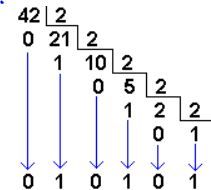
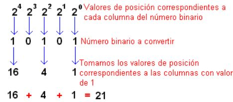
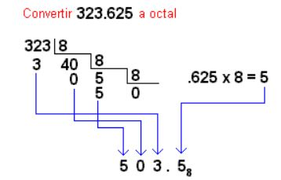
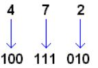
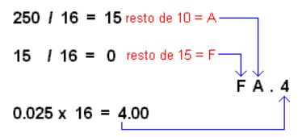
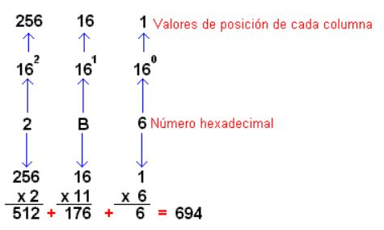

Esta pagina es para convertir numeros en sistemas de numeracion desde un decimal hacia binario, octal y hexadecimal.
Para convertir unnumero decimal a binario hay que dividir ese numero entre 2, despues dividimos el cociente obtenido otra vez por 2 y repetimos el mismo procedimiento hasta que el cociente sea 1.
Al finalizar eso el numero binario lo formamos tomando el primer digito del ultimo cociente, seguido por los residuos obtenidos en cada division, seleccionados de derecha a izquierda. Ejemplo:

Para convertir un binario a decimal hay que tomar los valores de posicion correspondiente a las columnas donde aparezcan unicamente unos. Despues, sumamos los valores de posicion para identificar el numero decimal equivalente. Ejemplo:
Para convertir un numero decimal a octal se toma el numero entero y se divide entre 8 repetidamente hasta que el dividendo sea menor que el divisor, para colocar entonces el numero 0 y pasar el dividendo a formar el primer dígito del numero equivalente en decimal. Luego, se toma la parte fraccionaria del numero decimal y la multiplicamos por 8 sucesivamente hasta que el producto no tenga números fraccionarios, despues, pasamos la parte entera del producto a formar el dígito correspondiente entonces al igual que los demás sistemas, el numero equivalente en el sistema decimal, esta formado por la unión del numero entero equivalente y el numero fraccionario equivalente. Ejemplo:
La facilidad para convertir un numero octal a binario es que unnumero octal se convierte a binario de manera individual. Ejemplo:
Para convertir un numero decimal a hexadecimal se toma la parte entera y se divide sucesivamente por el numero decimal 16(base) hasta que el cociente sea 0. Los numeros enteros resultantes de los cocientes, pasaran a conformar el numero hexadecimal correspondiente, teniendo en cuenta que el sistema de numeración hexadecimal posee solo 16 símbolo. La parte fraccionaria del numero a convertir se multiplica por 16 (Base) sucesivamente hasta que el producto resultante no tenga parte fraccionaria y el numero equivalente se forma, de la unión de los dos números equivalentes, tanto entero como fraccionario, separados por un punto que establece la diferencia entre ellos. Ejemplo:
Para convetir un numero hexadecimal a decimal multiplicamos el valor de posición de cada columna por el dígito hexadecimal correspondiente. y el resultado del número decimal equivalente se obtiene, sumando todos los productos obtenidos en el paso anterior. Ejemplo:
